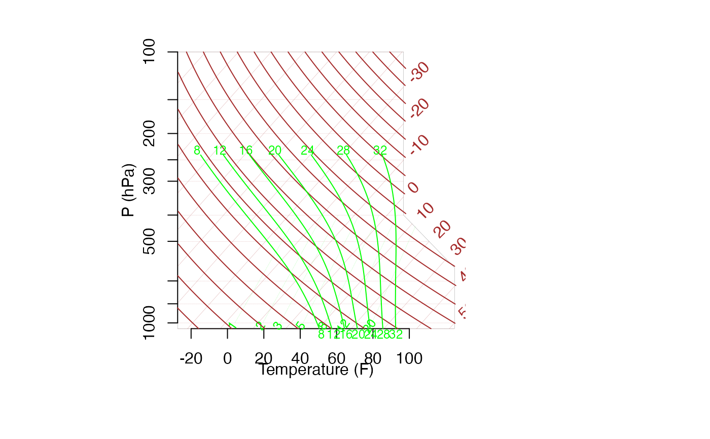
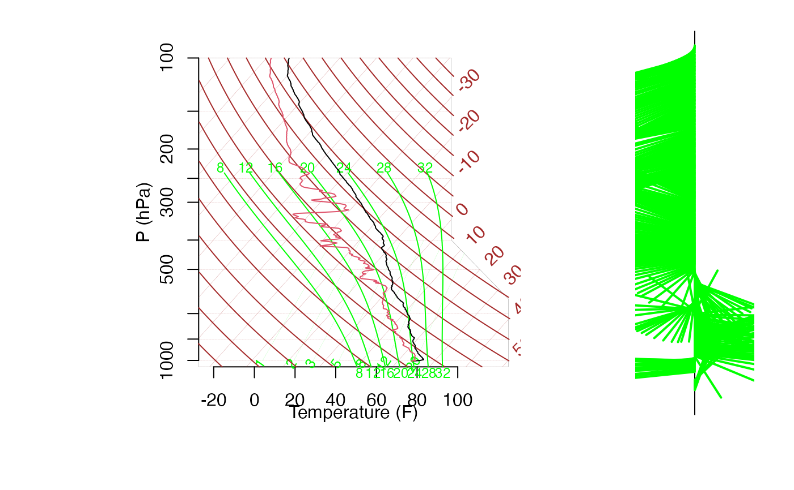

plotsonde.RdCreates a SKEW-T, log p diagram with dry-bulb temperature and dewpoint temperature traces versus (log) pressure. Optionally plots the vertical wind profile using wind barbs.
plotsonde(dataframe, skewT=TRUE, winds=FALSE, site="", title="",
windplot=NULL, s=3, col=c(1, 2), ... )R dataframe with at least the components
c( "press", "temp", "dewpt") corresponding to pressure (hPa), temperature (C) and dew point temperature (C).
Logical value. If false, will not plot the SKEW-T, log p diagram.
Logical value. If false, will not plot the winds profile.
Optional character to add to plot title.
Title for plot (must be a character value).
4X1 numeric vector that gives the position of wind profile plot (next to SKEW-T diagram). Only used if it is desired to have this plot in a different position. Generally, the default NULL is used and the placement is chosen automatically.
Size of winds profile plot.
Usual plotting parameter.
Other optional plotting parameters.
No value returned. Creates a skewt plot. Note that default is temperature horizontal scale is Farenheit.
1. Department of Defense, 1969, "USAF SKEW-T, log p DIAGRAM," DOD-WPC-9-16-1, Aeronautical Chart and Information Center, United States Air Force, St. Louis, Missouri 63118.
2. List, R.J. (editor), 1958, Smithsonian Meteorological Tables, Smithsonian Institute, Washington, D.C.
3. Nordquist, W.S., 1973, "Numerical Approximations of Selected Meteorological Parameters for Cloud Physics Problems," ECOM-5475, Atmospheric Sciences Laboratory, US Army Electronics Command, White Sands Missile Range, New Mexico 88002.
4. Stipanuk, G.S., 1973, "Algorithms for Generating a SKEW-T, log p Diagram and Computing Selected Meteorological Quantities," American Sciences Laboratory, US Army Electronics Command, White Sands Missile Range, New Mexico 88002.
data(ExampleSonde)
plotsonde(ExampleSonde, winds=TRUE)

#> [1] 0.800 0.950 0.153 0.937
